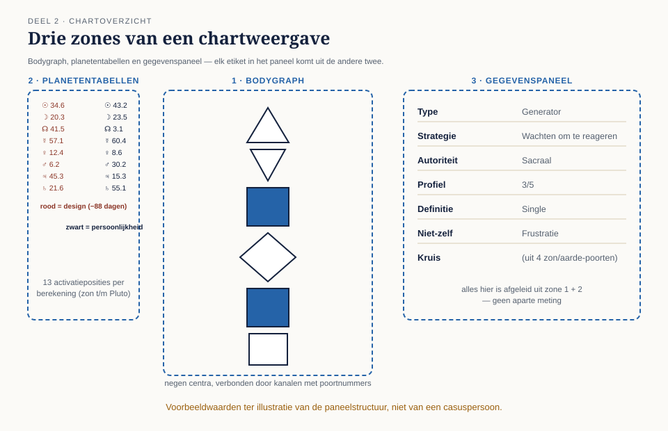
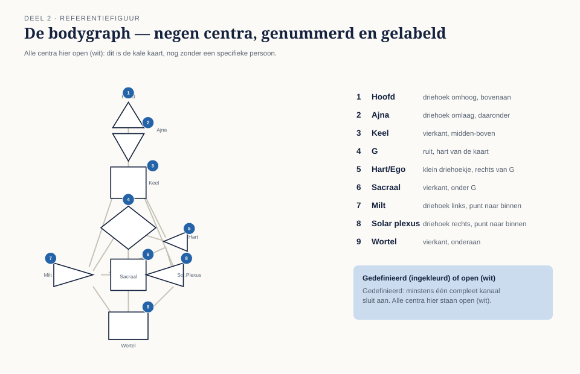
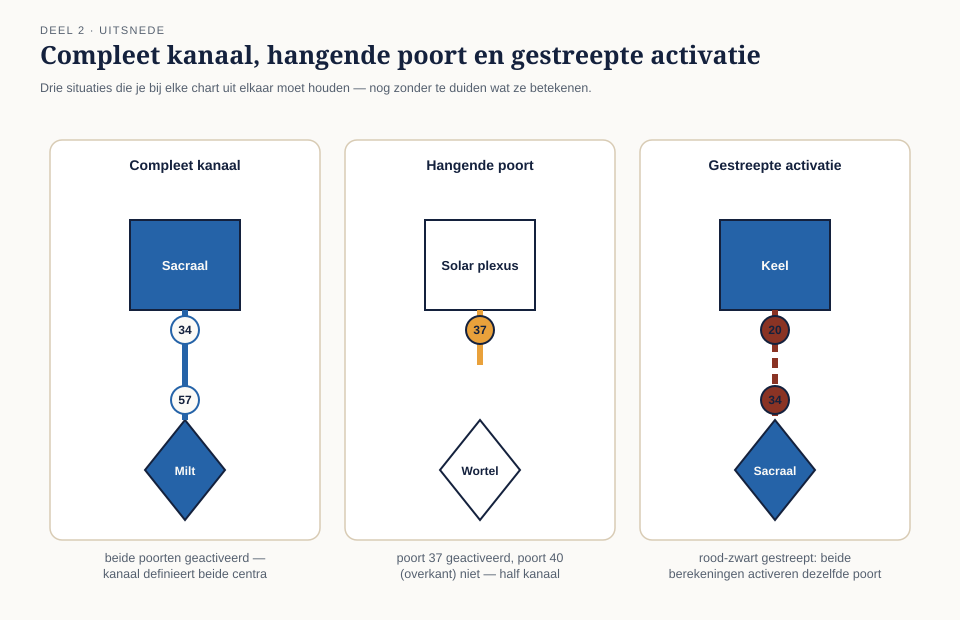

In deel 1 leerde u waar de onderdelen van de kaart vandaan komen; in dit deel leert u de kaart zelf lezen — nog zonder te interpreteren. Inventariseren is iets anders dan duiden. Aan het einde kunt u van elke chart systematisch beschrijven wát er staat, met het zes-stappenformulier dat u de rest van de cursus blijft gebruiken.
7secties
±2udagdeel + huiswerk
6controlevragen
9centra
Discipline van dit deel. Tijdens het inventariseren zijn betekenisuitspraken nog niet aan de orde — ook niet "oh, open solar plexus, dus emotioneel beïnvloedbaar". Beschrijven gaat altijd vooraf aan duiden; het duiden komt laag voor laag in de delen hierna.
Niveau 1: ➊ Oorsprong → ➋ De bodygraph lezen (hier) → ➌ Types en strategie → ➍ Autoriteiten → ➎ Centra gedefinieerd → ➏ Centra open → ➐ Het experiment → ➑ Synthese
01
Wat je ziet als je een chart opent
⏱ 14 min
Open je een chart in een willekeurige calculator, dan zie je vrijwel altijd drie zones:
De bodygraph in het midden: de figuur met negen geometrische vormen (de centra), verbonden door lijnen (de kanalen) met nummers (de poorten).
De mandala of planetentabellen eromheen of ernaast: twee kolommen met planeetsymbolen en poortnummers — rood (design) links, zwart (persoonlijkheid) rechts. Dit zijn de dertien activatieposities per berekening: zon, aarde, maan, noordelijke en zuidelijke maansknoop, en de acht planeten Mercurius tot en met Pluto.
Het gegevenspaneel: de samenvattende etiketten — type, strategie, autoriteit, profiel, definitie, niet-zelf-thema, incarnatiekruis. Alles in dit paneel is afgeleid uit de bodygraph; niets erin is een aparte meting.

Figuur 2-1 — de drie zones van een chartweergave
Die laatste zin is belangrijker dan hij lijkt. Veel beginners lezen alleen het paneel ("ik ben een Projector 1/3") en slaan de kaart over. In deze cursus werk je andersom: je leert uit de kaart afleiden wat er in het paneel staat, zodat je begrijpt waaróm het er staat — en fouten of verschillen tussen calculators kunt herkennen.
02
De negen centra: naam, plaats, vorm
⏱ 18 min
Van boven naar beneden, met vaste plaats en vorm:
#
Centrum
Vorm en plaats
Thema (voorproef)
1
Hoofd
Driehoek, punt omhoog, bovenaan
Inspiratie, mentale druk
2
Ajna
Driehoek, punt omlaag, daaronder
Conceptualiseren, zekerheid
3
Keel
Vierkant, midden-boven
Expressie, manifestatie
4
G
Ruit, hart van de kaart
Identiteit, richting, liefde
5
Hart/Ego
Klein driehoekje, rechts van G
Wilskracht, waarde, materie
6
Sacraal
Vierkant, onder G
Levens- en werkenergie
7
Milt
Driehoek links, punt naar binnen
Intuïtie, gezondheid, angst
8
Solar plexus
Driehoek rechts, punt naar binnen
Emoties, verlangen, golf
9
Wortel
Vierkant, onderaan
Druk, adrenaline, stress

Figuur 2-2 — de bodygraph: negen centra, genummerd en gelabeld
Gedefinieerd of open. Een centrum is gedefinieerd (ingekleurd in de kenmerkende kleur van de calculator) wanneer minstens één compleet kanaal erop aansluit; anders is het open (wit). Meer dan dit onderscheid heb je in dit deel niet nodig — maar je moet het in één oogopslag zien.
Ezelsbruggen
De drie vierkanten liggen op de middenas plus de wortel (keel, sacraal, wortel); de G is de enige ruit; hart is het kleinste vlak. Wie de vormen kent, vindt elk centrum ook op onbekende chartweergaven terug.
Controlevraag
Uit Werkboek deel 2, Opdracht 2.2 — blinde vormenkennis
1Welke drie ezelsbruggen helpen je de negen centra feilloos op vorm te herkennen, ook op een onbekende chartweergave?Toon antwoord
De drie vierkanten liggen op de middenas plus de wortel: keel, sacraal en wortel. De G is het enige centrum met een ruit-vorm. Het hart/ego is het kleinste vlak van alle negen centra.
03
Poorten, kanalen en hangende poorten
⏱ 18 min
Een poort is een genummerd punt (1-64) aan de rand van een centrum. Elke poort hoort bij precies één centrum en bij precies één of twee kanalen.
Een kanaal verbindt altijd twee vaste poorten, elk aan een ander centrum. Er zijn 36 kanalen; hun samenstelling ligt vast (kanaal 34-57 is altijd de verbinding tussen poort 34 aan het sacraal en poort 57 aan de milt).
Activatie: een poort is geactiveerd als hij voorkomt in de planetentabellen (rood, zwart of beide). Zijn beide poorten van een kanaal geactiveerd, dan is het kanaal compleet en definieert het beide centra.
Een hangende poort is een geactiveerde poort waarvan de overkant níet geactiveerd is: een half kanaal. In de kaart zie je hem als een gekleurd lijnstuk tot halverwege. Hangende poorten spelen vanaf deel 6 (open centra, conditionering) een hoofdrol; nu hoef je ze alleen te herkennen en te tellen.
Kleurcodes. Rood = alleen design-activatie, zwart = alleen persoonlijkheids-activatie, rood-zwart gestreept = beide berekeningen activeren dezelfde poort. Onthoud de betekenislaag alvast in één zin: zwart noem je straks "waar je je van bewust bent", rood "wat in je lichaam is ingebakken" — de uitwerking volgt in deel 9 (niveau 2).

Figuur 2-3 — compleet kanaal, hangende poort, gestreepte activatie
Controlevragen
Uit Werkboek deel 2, Opdracht 2.3 — compleet, hangend of niets?
1Poort 34 is zwart geactiveerd, poort 57 is rood geactiveerd. Compleet kanaal, hangende poort, of geen activatie — en welke centra worden eventueel gedefinieerd?Toon antwoord
Compleet kanaal (C). Beide poorten van kanaal 34-57 zijn geactiveerd (kleur maakt voor de compleetheid niet uit). Dit definieert sacraal (poort 34) en milt (poort 57).
2Poort 59 is zwart geactiveerd, poort 6 (de overkant) is niet geactiveerd. Compleet, hangend, of geen activatie?Toon antwoord
Hangende poort (H). Poort 59 is geactiveerd maar de overkant van het kanaal (poort 6) niet — een half kanaal. Er wordt geen centrum gedefinieerd; wél geeft dit een extra "geur" aan het open centrum waar poort 59 aan hangt (relevant vanaf deel 6).
04
Het gegevenspaneel: afgeleid, niet gemeten
⏱ 14 min
Elk etiket in het paneel heeft één bron in de kaart:
Etiket
Wordt afgeleid uit
Type
Welke centra gedefinieerd zijn en hoe ze (via kanalen) met de keel verbonden zijn — regels in deel 3
Strategie
Volgt één-op-één uit het type
Autoriteit
De hoogste "beslisser" in een vaste rangorde van gedefinieerde centra — regels in deel 4
Profiel
De lijnnummers van de zon in persoonlijkheid en design (bijv. 3/5) — niveau 2
Definitie
Of de gedefinieerde centra één aaneengesloten gebied vormen (single) of meerdere (split) — niveau 2
Niet-zelf-thema
Volgt één-op-één uit het type
Incarnatiekruis
De vier zon/aarde-poorten van beide berekeningen — niveau 2
De les van deze tabel: het paneel bevat geen nieuwe informatie. Wie de kaart kan lezen, kan het paneel reconstrueren — dat ga je in deel 3 en 4 voor type en autoriteit daadwerkelijk doen.
Controlevraag
Uit Werkboek deel 2, Opdracht 2.5 — de paneelcheck als detective
1Na alleen de stappen 2 t/m 5 van het formulier: welke paneeletiketten kun je nog niet zelf controleren, en welke kennis mis je daarvoor?Toon antwoord
Type, autoriteit en profiel kun je op basis van alleen centra, kanalen, hangende poorten en kleuren nog niet met zekerheid afleiden — daarvoor mist u de afleidingsregels (de beslisboom voor type uit deel 3, de rangorde voor autoriteit uit deel 4, en de lijnenleer voor profiel uit niveau 2). Dat is precies de agenda van de komende delen.
05
Het zes-stappenformulier
⏱ 20 min
Dit formulier gebruik je vanaf nu bij elke chart die je voor het eerst ziet. Het dwingt tot kijken vóór concluderen — in niveau 3 blijkt het de eerste fase van elke professionele reading te zijn.
Bron en data. Welke calculator, en zijn geboortedatum, -tijd en -plaats correct ingevoerd? (Een uur verschil kan een chart wezenlijk veranderen; zonder betrouwbare geboortetijd is elke conclusie voorlopig.)
Centra. Welke van de negen zijn gedefinieerd, welke open? Noteer als lijst.
Kanalen. Welke complete kanalen zie je? Noteer de nummerparen.
Hangende poorten. Tel ze en noteer de nummers.
Kleuren. Vallen er activaties op die puur rood of gestreept zijn? Alleen noteren.
Paneelcheck. Lees pas nu het gegevenspaneel en noteer type, autoriteit en profiel. Controleer later (deel 3-4) of je ze zelf had kunnen afleiden.
De discipline erbij
Tijdens het invullen geen betekenisuitspraken — ook niet "oh, open solar plexus, dus emotioneel beïnvloedbaar". Nog even niet. Beschrijven eerst; het duiden komt, laag voor laag, in de delen hierna. Deelnemers die deze discipline in deel 2 opbouwen, blijken in niveau 3 de zorgvuldigste readers.
06
De vijf personen: eerste inventarisatie
⏱ 16 min
In het werkboek inventariseer je de charts van Emma en Lena met het formulier. Twee dingen vallen dan meteen op, en die mag je alvast onthouden als feit zonder duiding: Emma heeft drie gedefinieerde centra waaronder het sacraal; bij Lena is geen enkel centrum gedefinieerd — het formulier bestaat bij haar vrijwel volledig uit stap 4 (hangende poorten). Waarom dat haar tot het zeldzaamste type maakt, hoor je in deel 3.
Persoon
Gedefinieerde centra
Complete kanalen
Hangende poorten
Emma van Dijk
Sacraal, milt, wortel
34-57
5, 14, 27, 50, 58
Lena Kovač
Geen
Geen
59, 37, 15, 47, 64, 41
Controlevraag
Uit Werkboek deel 2, Opdracht 2.4 — inventarisatie Emma en Lena
1Bij wie kost stap 2 (centra) van het formulier de meeste tijd, en bij wie stap 4 (hangende poorten) — en waarom, zonder te duiden?Toon antwoord
Bij Emma kost stap 2 de meeste tijd: zij heeft drie gedefinieerde centra (sacraal, milt, wortel) via kanaal 34-57, dus er is iets in te vullen en te controleren. Bij Lena kost stap 4 de meeste tijd: geen enkel centrum is gedefinieerd, dus het formulier bestaat bij haar vrijwel volledig uit het tellen van de zes hangende poorten (59, 37, 15, 47, 64, 41). Dit is een beschrijvend verschil in kaartstructuur — nog geen uitspraak over wat het betekent.
07
Samenvatting
⏱ 10 min
Een chart bestaat uit bodygraph, planetentabellen (rood = design, ±88 dagen vóór geboorte; zwart = persoonlijkheid, geboortemoment) en een gegevenspaneel dat volledig uit de kaart is afgeleid. De negen centra herken je aan vorm en plaats; ze zijn gedefinieerd zodra een compleet kanaal (twee geactiveerde poorten) erop aansluit. Hangende poorten zijn halve kanalen. Het zes-stappenformulier — bron, centra, kanalen, hangende poorten, kleuren, paneelcheck — is vanaf nu je vaste eerste handeling bij elke chart, en beschrijven gaat altijd vooraf aan duiden.
Begrip
Omschrijving
Activatie
Poort die in de planetentabellen voorkomt (rood, zwart of gestreept)
Hangende poort
Geactiveerde poort zonder geactiveerde overkant; half kanaal
Gedefinieerd centrum
Centrum met minstens één compleet aansluitend kanaal
Open centrum
Centrum zonder compleet aansluitend kanaal
Gegevenspaneel
Samenvattende etiketten; volledig afgeleid uit de kaart
1Wat is het verschil tussen beschrijven en duiden, en waarom is dat onderscheid de kern van dit deel?Toon antwoord
Beschrijven is vaststellen wát er in de kaart staat (welke centra, kanalen, hangende poorten, kleuren) zonder daar een betekenis aan te hangen. Duiden is zeggen wat dat zou betekenen voor de persoon ("dus jij bent..."). Dit deel oefent uitsluitend beschrijven, omdat elke duiding pas geldig is als hij op een correcte, volledige inventarisatie steunt — vandaar dat "beschrijven eerst" in deel 18 (readingmethodiek) terugkeert als fase één van elke professionele reading.
Verder naar deel 3
Deel 3 begint het duiden: met de beslisboom leidt u het type af uit definitie, sacraal en motor-keelverbinding, en ontmoet u alle vijf casuspersonen in hun type.